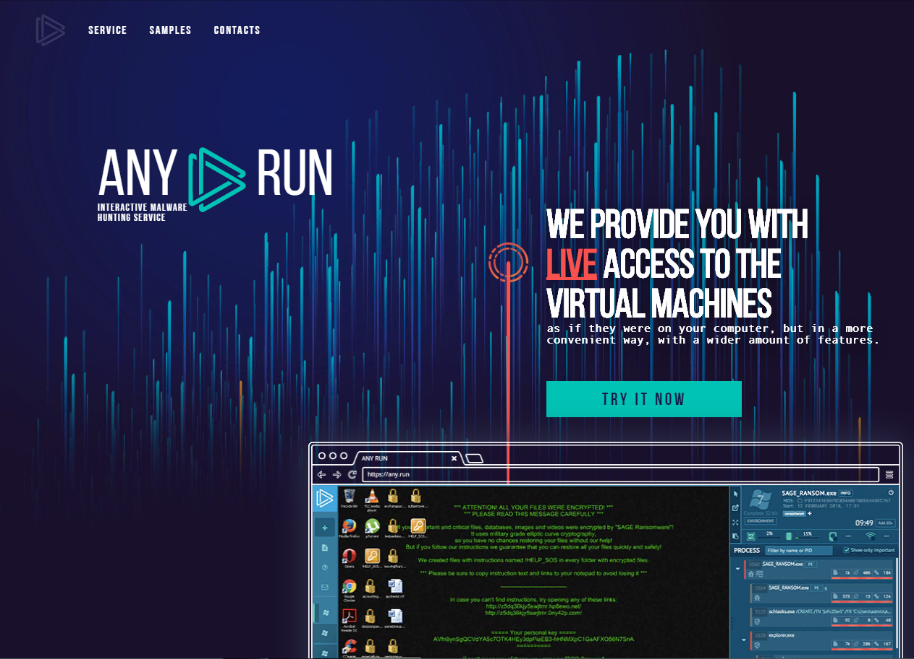
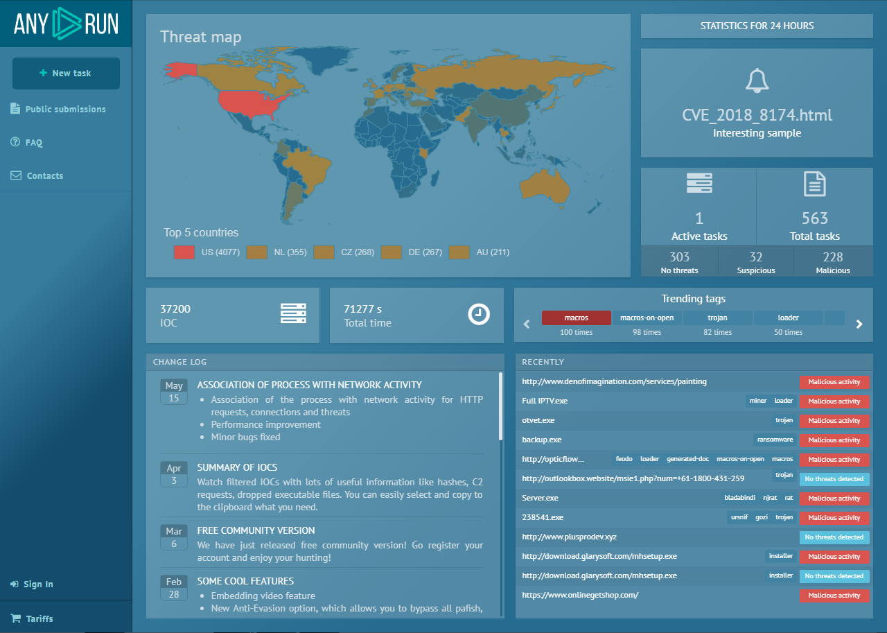
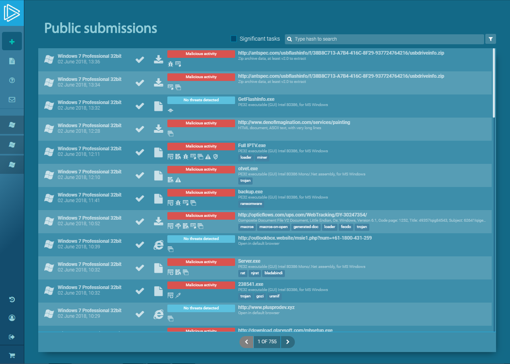
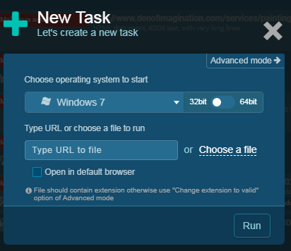
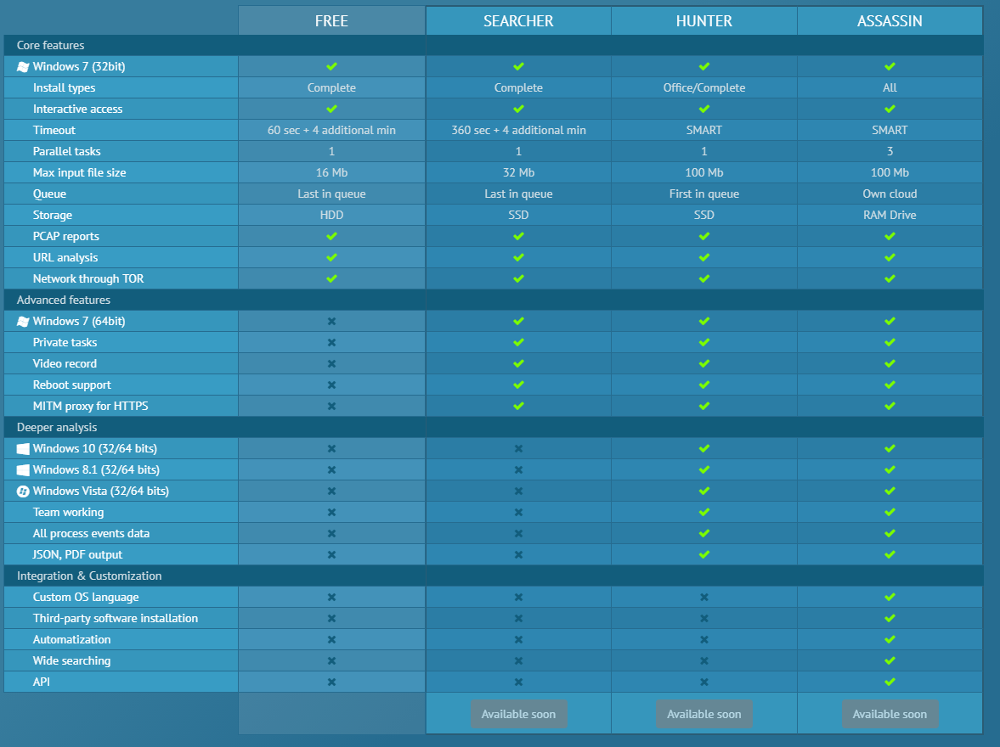
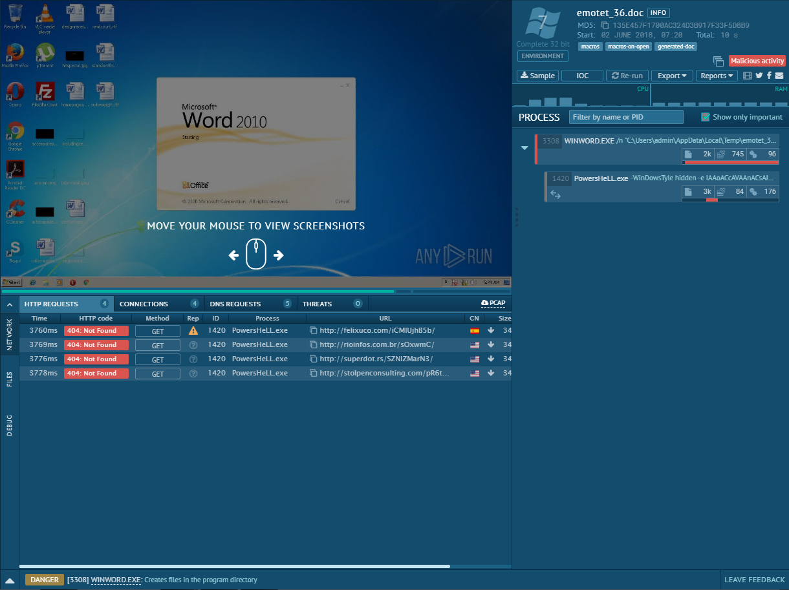
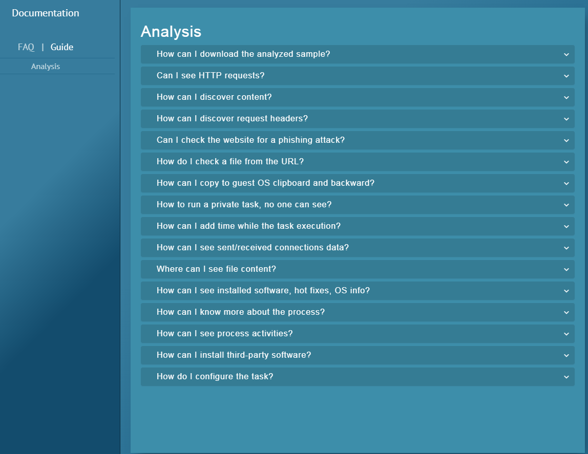

Hello everyone! Today I want to tell you about and show you the ANY.RUN website. Let's get started. This site is a kind of virtual machine. Currently, it is not enough to just run the file on the test system to be confident in its security. For some types of malware or vulnerabilities (e.g. APT) Direct interaction with a person is required. ANY.RUN allows you to interactively monitor the research process and change it if necessary, just like in a real system, instead of relying on an automatic sandbox. It also allows examine in detail and find what and where is created (folders or files). This is what the main site looks like:
This is what the page with the threat map and 24-hour statistics looks like (there is also a change log, recent publications, etc.):
Some features are not yet available because they are being tested. To start your research, you need to register your account, after which you will receive a confirmation email. After this, you will be taken to the page where you will actually do the testing:
You can look at other people's publications and search for viruses by hash (if you know it). To start the test, you need to click the plus sign and select the so-called task (virus). But for this, it is necessary You need to disable your antivirus because you'll have to choose from the desktop. It could be in .exe, .js, .txt, .vb, in an archive, etc. (it is possible to specify a URL with a malicious file). You can choose the bitness of Windows, but unfortunately, only the 32-bit version is available in the free plan:
Speaking of plans, only the free plan will be available. Other features are planned for later:
The service displays many aspects of testing, such as the creation of new processes, file and registry activity, network requests and more in real time. This allows you to draw conclusions while the task is running, without waiting for the final report.
If you want to know more information about how to download samples, where to see http requests, how to see process actions, then you can see all this in the documentation, in the “Guide” section:
That's all I wanted to tell you. Happy researching!